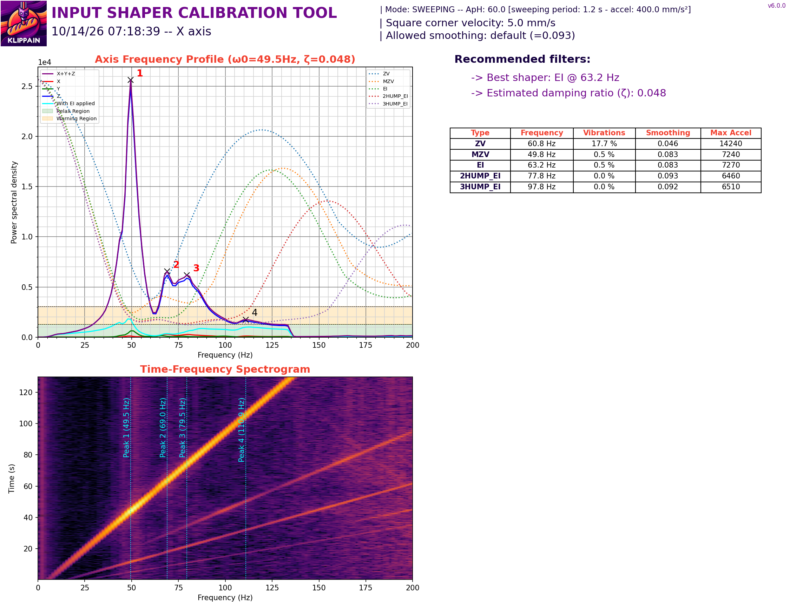
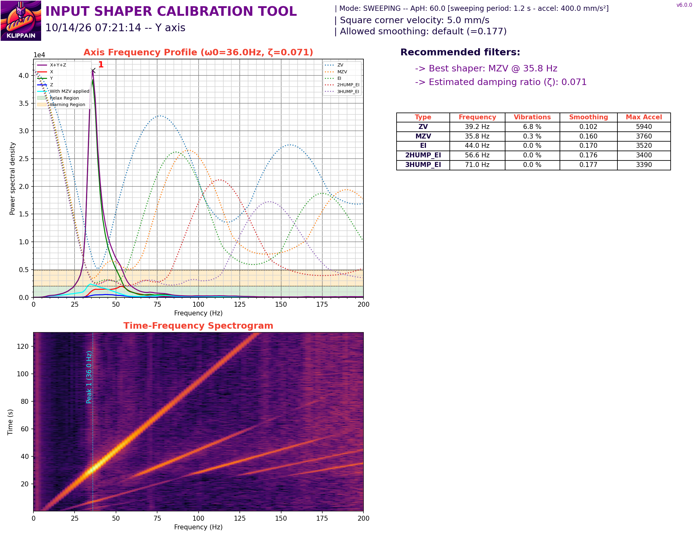
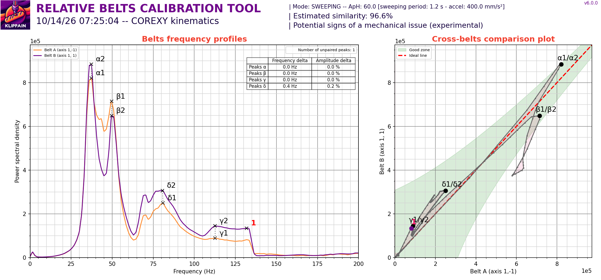
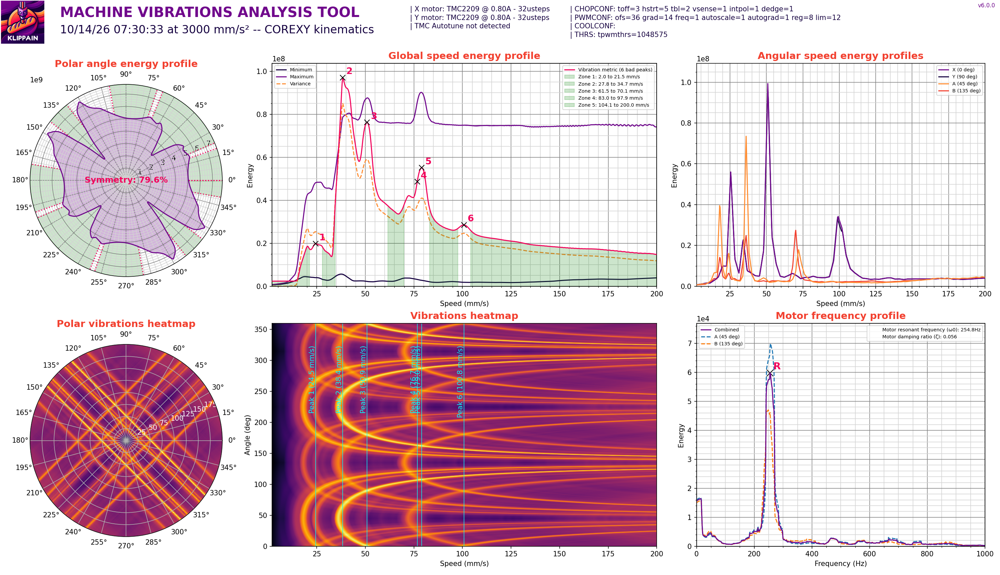

voron24 — tune-up report
- Update 13:15: the Pi came back; menus are deployed and Klipper reloaded cleanly; motion calibrations ran (section 3b). Menu entries were not tapped on the physical screen.
- Everything under Measured comes from earlier sessions (repo history,
docs/HANDOFF.md, Shake&Tune plots). - The screen menus and macros loaded on the machine and the commands they call exist; I ran the Calibrate macros over Moonraker, not through the screen.
- Only the motion-only calibrations were run (no filament, cold). Pressure advance, flow, hot mesh and ERCF gates 1-11 still need you and material.
1. Screen controls added (not yet deployed)
| Menu | Contains | Status |
|---|---|---|
ERCF (ercf_menu.cfg) | Status, home selector, select / change tool 0-11, load, unload, eject, preload gate, check gates; Recovery (auto recover, retry load, mark loaded/unloaded, unlock, resume); servo up/move/down, motors off, gear sync on/off; options (clog detection, endless spool, bypass, wipe nozzle); ERCF calibration (selector, gear per gate, encoder, bowden, all gates, toolhead). | unverified on printer |
Calibrate (calibration_menu.cfg + calibration.cfg) | Prep: home, QGL, probe accuracy, bed mesh cold/hot, Z offset. Heaters: PID bed/hotend. Motion: noise check, looseness test, axes map, input shaper, belts, vibration profile, max-accel test. Print tuning: PA tower, set PA, extruder check, flow notes, snapshot. | unverified on printer |
Included at the end of printer.cfg. Unverified commands: MMU_SYNC_FEEDBACK, MMU_ENDLESS_SPOOL, MMU_SELECT_BYPASS, MMU_CALIBRATE_GEAR GATE=, MMU_CALIBRATE_TOOLHEAD. Run tools/validate.sh after deploy and check the Klipper log for unknown-command or menu errors.
2. Measured and applied (from earlier sessions)
| Item | Value | |
|---|---|---|
| Homing | 60 mm/s, SGTHRS 145 (final) | done |
| TAP repeatability | sd 0.0025 mm hot (0.001 cold) | done |
| QGL | hot range 0.0075 mm; 31 s | done |
| Bed mesh | 9x9, range 0.1625 mm hot, 0.15 mm cold | done |
| Bed PID (100 C) | 49.474 / 1.527 / 400.736 | done |
| Hotend PID (250 C) | 27.601 / 1.786 / 106.609 | done |
| Extruder rotation_distance | 22.27 (100 mm commanded = 100 mm moved) | done |
| Input shaper | X ei 63.2 Hz · Y mzv 35.8 Hz | done |
| Travel accel | 8000 mm/s² tested OK, 10000 lost 0.76 mm | done |
| ERCF encoder / gate 0 gear | 0.9434 / 22.523 | done |
| Bowden | 972.9 mm (passes 971.2 / 980.8 / 981.9) | done |
| Toolhead extruder-to-nozzle / residual | 67 / 32 mm | done |
| Selector offsets (hand-measured) | 1.5, 25.6, 49.7, 72.8, 95.2, 119.3, 142.4, 166.4, 189.7, 212.8, 236.0, 260.1; bypass 274.4 | done |
| Prints | 25 mm box (single colour) and 2-colour logo both completed | done |
3. Shake&Tune results (2026-10-14, cold bed, nozzle empty)




- Y is the limiter. Single peak at 36 Hz, MZV max accel about 3760. Keep print accel at or below ~3500 on Y-heavy paths until the Y axis is stiffer.
- X has several peaks (49.5, 69, 79.5, 111 Hz); EI allows about 7270 mm/s². The 4 peaks suggest something is not rigid (see mechanical list).
- Belts: similarity 96.6 %, peak delta 0-0.4 Hz, so tension is matched. Belt B is stronger at 70-130 Hz; Shake&Tune flags a possible mechanical issue (experimental).
- Speeds to avoid (3000 mm/s² profile): 24, 38, 51, 77-79, 101 mm/s. Good zones: 2-21, 28-35, 62-70, 83-98, above 104. Motor resonance 254.8 Hz, symmetry 79.6 %.
3b. New on-printer run (2026-10-15, cold, empty toolhead)
Run through the new menu macros after deploying them (menus load without errors; all commands they call exist, one fixed: belts now use COMPARE_BELTS_RESPONSES).
| Test | Result | Verdict |
|---|---|---|
| Home + QGL | range 0.00625 mm, 2 retries | excellent |
| ADXL noise (x/y/z) | 62 / 82 / 134 | OK; Z high-ish, check ADXL mount and cable |
| Y shaper | one peak 36.0 Hz, MZV 35.8 Hz (identical to last run) | reproducible, but low |
| X shaper | peaks 51.1, 69.1, 76.6, 109.6, 132.2 Hz; best MZV 50.0 Hz (applied now: EI 63.2 Hz) | changed, not applied |
| Belts | similarity 98.1 % (was 96.6 %), "acceptable mechanical health" | good |
| Vibrations profile | motor resonance 255.3 Hz (was 254.8), damping 0.057 | stable |
Decision for you: X recommendation moved from EI 63.2 to MZV 50.0 Hz, with the lower-frequency peak shifting from 49.5 to 51.1 Hz. That is a ~1.6 Hz move, so the mechanics are not fully repeatable at X, which fits the loose-part suspicion in section 5. I did not apply it. Re-test after tightening the TAP and toolhead, then re-run Input shaper X+Y.
3c. Comparison with published 2.4 350 / TAP machines
| Source | X | Y |
|---|---|---|
| voron24 (this machine) | MZV 50.0 / EI 63.2 Hz, 5 peaks | MZV 35.8 Hz |
| 2.4 R2 350, Mellow TAP (forum) | ZV 54.0 Hz | EI 38.6 Hz; ringing at 5000 accel |
| Klipper Discourse, 2.4 samples | 3hump_ei 91.4 / MZV 71.2 Hz | EI 39 / 38.4 Hz |
- Y at 35.8 Hz is 2.5-3 Hz below the published 38-39 Hz. Small but consistent with "Y is the limiter"; published machines still saw ringing at 5000, so keeping Y accel about 3500 is reasonable.
- X at 50-63 Hz sits at the low end of the published range (54-91 Hz), and our 5 peaks look messier than the single clean X peak typical of a rigid gantry.
- TAP: published threads and a TAP comparison thread show probe design changes the measured resonance, and TAP is known to rattle. The search found no confirmed fix for a loose-TAP rattle. Practical check: re-run the looseness test with the TAP bolts tightened, the probe pin/retainer seated, and the probe cable strain-relieved; a peak that moves or disappears is the TAP.
These are anecdotes from forum posts with different belts, gantry mass and filtering; use them for rough scale, not as targets.
4. To tune: priority list
| # | Task | Why | How (on-screen) | Gain |
|---|---|---|---|---|
| 1 | Pressure advance | Material PA 0.0525 is an uncalibrated carry-over | Calibrate > Print tuning > Pressure adv. tower, then Set PA | corners/seams |
| 2 | Flow / extrusion multiplier | Never measured | Print 20 mm cube, 2 walls, flow = nominal / measured wall | dimensions |
| 3 | Re-run shaper hot, with filament loaded | Done cold with an empty toolhead; the ERCF/bowden adds weight and drag | Calibrate > Motion > Input shaper X+Y | ringing |
| 4 | Y axis stiffness | 36 Hz is low for a 350; limits Y accel to ~3500 | See mechanical list (gantry, belts, motor mount) | accel |
| 5 | Hot bed mesh and TAP z_offset recheck | z_offset -0.375 carried over; mesh only checked cold/short hot | Calibrate > Prep > Bed mesh (hot 60C) | first layer |
| 6 | Max-accel confirmation | Corner ringing and skipped-step limit not tested under load | Calibrate > Motion > Max accel test | speed |
| 7 | Gate 1-11 gear rotation_distance | Only gate 0 gear is calibrated; HH warns gate 1 is not | ERCF > ERCF calibrate > Gear gate N (needs filament) | swaps |
| 8 | Re-run Shake&Tune belts after any change | Belt B 70-130 Hz anomaly | Calibrate > Motion > Belt tension | check |
5. Mechanical tightening and looseness checklist
Run Calibrate > Motion > Looseness test before and after each item. An extra sharp peak or a drop in peak count means it helped.
- Toolhead: the X axis has 4 peaks. Check the carriage screws, Stealthburner mounting, CW2 extruder bolts, the ADXL mount and the cable chain strain relief. Toggle one at a time.
- Belts: both at the same tension (already 96.6 % similar). Check pulley set screws and idler bearings (belt B strong at 70-130 Hz).
- Y (36 Hz): gantry-to-rail screws, bed frame, bed mounts, Y motor mount, 2020 extrusion corner brackets.
- Frame: square and bolted; feet level; panels not rattling.
- Bed: bed screws and spacers, Z leadscrew couplers.
- ERCF (not part of motion plots): servo buzzing at each gate is mechanical (horn spline / lever friction, top-hat pressure) and still open. Selector pitch error is fixed by the hand-measured per-gate offsets.
- Cutter: recheck arm friction from the toolhead cover periodically; a failed cut shows as "Excess slippage" on unload.
6. Reproducibility
- Run
tools/backup-calibration.sh --pushafter every calibration; apply values throughoverrides.cfg, not SAVE_CONFIG. - Keep
tools/validate.shat 0 FAIL and the update guard installed. - Per print: heat soak with the chamber, hot QGL, adaptive mesh, wipe before probing (all already in START_PRINT).
- Re-run the shaper and PA when filament brand/colour or hotend hardware changes.
7. Next steps
- Bring the Pi back online,
git pull(or push from here), restart Klipper, check the Klipper log for menu errors. - Confirm every new ERCF and Calibrate menu entry on the screen.
- Work the priority list in section 4 and re-generate this report with measured values.